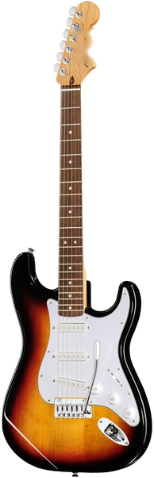

●
Dernier scan :
2026-06-26 07:56:31

THE
GUITAR
HUNTERS
Vintage & Collector — Reverb Scanner
944
affaire(s)
·
de
195 €
à
21 140 €
·
98
modèle(s)
·
162
sous le prix d'entrée
Scan du 2026-06-26 07:56:31 · reverb.com · trié par prix croissant
📲
Installe
Guitar Hunters
sur ton écran d'accueil.
Installer
×
⚙ Filtres
appuyer pour ouvrir
▾
★ Recherches favorites
▾
★
▶
💾
★
▶
💾
★
▶
💾
▶ applique · 💾 enregistre les filtres actuels · ★ choisit celui chargé à l'ouverture
Période
Toutes
50s
60s
70s
80s
90s+
Moderne
Pays
Allemagne
Canada
Chine/Indonésie
Corée/Indonésie
France
France/Asie
Japon
Japon/Corée
Mexique
USA
USA/Import
USA/Mexique
Marques
Marques
▾
Allemagne
Duesenberg
Framus
Höfner
Canada
Seagull
Chine/Indonésie
Epiphone
Squier
Corée/Indonésie
Schecter
France
Lag
France/Asie
Lag
Japon
Cimar
Fender Japan
Greco
Ibanez
Sigma
Tokai
Vantage
Westone
Yamaha
Japon/Corée
ESP
Mexique
Fender
USA
Epiphone
Fender
Gibson
Gretsch
Guild
Jackson
Martin
Music Man
National
PRS
Peavey
Rickenbacker
Silvertone
USA/Import
Washburn
USA/Mexique
EVH
Modèle
État & prix
État
Mint
Brand New
B-Stock
Excellent
Very Good
Good
Fair
Non Functioning
€ à
€
★ Mimi's Picks
— Bonnes affaires
🆕 Nouveautés
Réinitialiser
↑ Filtres